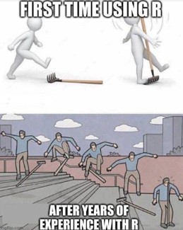

Introduction
This book is structured around 4 main parts :
Get Started with R and Master your toolboxes.
Hands on Supply Chain.
Demand and Supply Planning.
Sales Forecasting and analysis.
Operational Research.
R shiny.
Get Started with R and Master your toolboxes
To give you the skills, as a Supply Chain professional, to handle efficiently and easily most of the data processing situations that you will encounter.
We will get started with R, and learn in the first toolbox how to perform the most common ETL (Extract Transform Load) activities.
Once the data processing is done, you will need to visualize the data, usually through charts and tables. So the second and third toolboxes will focus on the Data Visualization (Charts and Tables).
Hands on Supply Chain
Demand and Supply Planning
This second part will be a focus on Supply Chain, and particularly the Demand and Supply Planning, using the R packageplanr.
I’ve created the first function of planr in 2016, and keep updating and developing this package. I use it daily in my work. This package is enriched regularly thanks to the various ideas and suggestions of the persons I have the chance to meet.
We will go through each function and understand how they work on small examples, and then apply them to several, larger, user cases
Sales Forecasting and analysis
R was developed by statisticians and is a powerful tool for data analysis and to run statistical models. In this section, we will then see how to :
create Statistical Forecasts : using the classic Time Series approaches and Machine Learning.
perform Sales Analysis : applying a RFM (Recency | Frequency | Monetary) methodology.
Operational Research
We will use the R package lpSolve to identify the optimal solution to a defined problem, for example :
to balance a production planning, between production charge and available capacity.
to find the shortest route to deliver some products to different customers.
…
A definitely “nice to have” skill in our Supply Chain toolbox.
R shiny
In this last part we’ll learn how to create web apps using the wonderful shiny library.
Shiny is a real game changer, to move from BI tools to software development and to create beautiful and powerful web apps
Using R and Shiny, with only a few lines of R codes, you will be able to create your own Supply Chain softwares, to run your Demand and Supply Planning as well as your S&OP process.
We will start by creating a basic Shiny app, then introduce more capabilities related to the navigation part, and see learn how to use reactive elements, modules and finally create a write-back table to capture user’s inputs.
Let’s go!
Like learning any new language, R might look tough at the beginning.
If you are using R for the first time, you might be puzzled and it’s normal! Then you will get gradually better and better with the more you practice it.
An easy way to start is to do a lot of “copy-paste” of the codes to understand how they work and get familiar to the syntax.
Actually, the main point is to know the methodology : which data transformation, calculation or visualization you want to do, and simply refer to the related “toolboxes” to get and apply the codes we need.
This book aims to be your copilot to apply R in Demand and Supply Planning, in your daily activities.
I had a lot of fun writing this book, and enjoy being part of the R community. I hope you will find this book useful to use R in Supply Chain, and also enjoy practice it regularly!
Cheers,
Nico
P.S. : a very special thank you to April; your comments, support and ideas were an amazing motivation to write this book. You’re simply fantastic!
